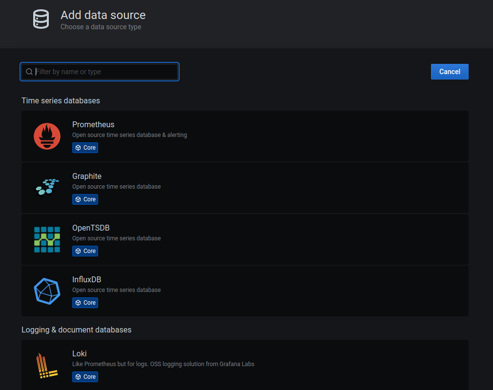
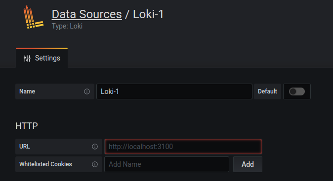
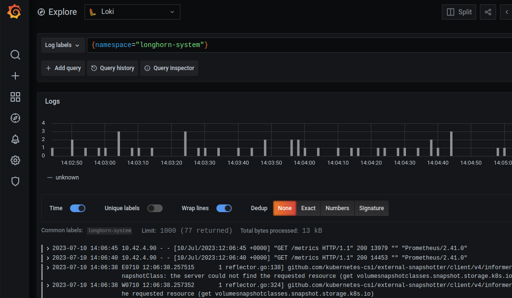
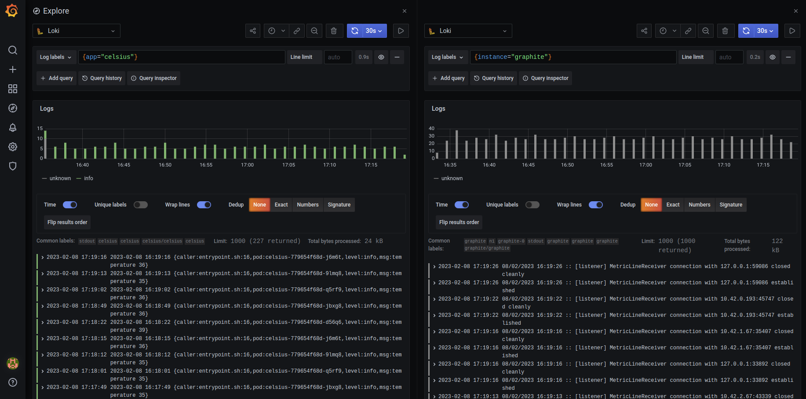

PI4 Stories
Raspberry Pi 4 cluster Series - Setup logging with Loki¶
This story is mostly based on Logging Logs [1] article.
We have our Prometheus and Grafana on k3s cluster if you followed my guides. But Prometheus is not able to get logs from k3s nodes, containers, Kubernetes API, and it's not made of that kind of monitoring. We need Loki + Promtail, you can find all info on their Grafana Loki and Promtail.
-
Loki - or also known as Grafana Loki - log aggregation system, it does not index the contents of the logs, but rather a set of labels for each log stream. In simple terms, it's the app that accepts logs from everything and store it.
-
Promtail - is a tool that reads the logs from various sources like OS, Containers, Kubernetes API server etc... and push them to Loki.
We will be using Arkade to install loki, therefore, we first need to install it.
Install Arkade¶
This is basically Helm, just made even simpler.
More info about Arkade: https://github.com/alexellis/arkade
$ curl -SLsf https://dl.get-arkade.dev/ | sudo sh
aarch64
Downloading package https://github.com/alexellis/arkade/releases/download/0.8.62/arkade-arm64 as /tmp/arkade-arm64
Download complete.
Running with sufficient permissions to attempt to move arkade to /usr/local/bin
New version of arkade installed to /usr/local/bin
Creating alias 'ark' for 'arkade'.
_ _
__ _ _ __| | ____ _ __| | ___
/ _` | '__| |/ / _` |/ _` |/ _ \
| (_| | | | < (_| | (_| | __/
\__,_|_| |_|\_\__,_|\__,_|\___|
Open Source Marketplace For Developer Tools
Version: 0.8.62
Git Commit: 003e8716bbc987c412643af3a90cf87ef778bd2e
🐳 arkade needs your support: https://github.com/sponsors/alexellis
gdha@n1:~/projects/pi4-logging$ ls /usr/local/bin
ark arkade crictl golangci-lint helm k3s k3s-killall.sh k3s-uninstall.sh kubectl kube-linter
To upgrade arkade just re-run above command.
Installation of loki and promtail¶
Before we start we have to make sure that the namespace has been created:
gdha@n1:~/projects/pi4-logging$ kubectl apply -f logging-namespace.yaml
namespace/logging created
Then, we can use the installed arkade executable to install loki
gdha@n1:~/projects/pi4-logging$ arkade install loki -n logging --persistence
2023/02/03 15:24:10
Using Kubeconfig: /home/gdha/.kube/config
[Warning] unable to create namespace logging, may already exist: Error from server (AlreadyExists): namespaces "logging" already exists
Client: aarch64, Linux
2023/02/03 15:24:10 User dir established as: /home/gdha/.arkade/
2023/02/03 15:24:10 Looking up version for helm
2023/02/03 15:24:10 Found: v3.11.0
Downloading: https://get.helm.sh/helm-v3.11.0-linux-arm64.tar.gz
/tmp/helm-v3.11.0-linux-arm64.tar.gz written.
2023/02/03 15:24:14 Looking up version for helm
2023/02/03 15:24:14 Found: v3.11.0
2023/02/03 15:24:15 Extracted: /tmp/helm
2023/02/03 15:24:15 Copying /tmp/helm to /home/gdha/.arkade/bin/helm
Downloaded to: /home/gdha/.arkade/bin/helm helm
"grafana" has been added to your repositories
Hang tight while we grab the latest from your chart repositories...
...Successfully got an update from the "metallb" chart repository
...Successfully got an update from the "longhorn" chart repository
...Successfully got an update from the "traefik" chart repository
...Successfully got an update from the "kiwigrid" chart repository
...Successfully got an update from the "grafana" chart repository
Update Complete. ⎈Happy Helming!⎈
VALUES values.yaml
Command: /home/gdha/.arkade/bin/helm [upgrade --install loki-stack grafana/loki-stack --namespace logging --values /tmp/charts/loki-stack/values.yaml --set loki.persistence.enabled=true]
Release "loki-stack" does not exist. Installing it now.
NAME: loki-stack
LAST DEPLOYED: Fri Feb 3 15:24:22 2023
NAMESPACE: logging
STATUS: deployed
REVISION: 1
NOTES:
The Loki stack has been deployed to your cluster. Loki can now be added as a datasource in Grafana.
See http://docs.grafana.org/features/datasources/loki/ for more detail.
=======================================================================
= loki has been installed. =
=======================================================================
# Get started with loki here:
# https://grafana.com/docs/loki/latest
# See how to integrate loki with Grafana here
# https://grafana.com/docs/loki/latest/getting-started/grafana
# Check loki's logs with:
kubectl logs svc/loki-stack
kubectl logs svc/loki-stack-headless
# If you installed with Grafana you can access the dashboard with the username "admin" and password shown below
# To get password
kubectl get secret loki-stack-grafana -o jsonpath="{.data.admin-password}" | base64 --decode ; echo
# Forward traffic to your localhost
kubectl port-forward service/loki-stack-grafana 3000:80
whale arkade needs your support: https://github.com/sponsors/alexellis
Now, verify if the pods have been created:
gdha@n1:~/projects/pi4-logging$ kubectl get pods -n logging
NAME READY STATUS RESTARTS AGE
loki-stack-0 0/1 Running 0 114s
loki-stack-promtail-d45tz 1/1 Running 0 114s
loki-stack-promtail-qv75h 1/1 Running 0 114s
loki-stack-promtail-rhcr9 1/1 Running 0 114s
loki-stack-promtail-dwz7s 1/1 Running 0 114s
loki-stack-promtail-4qwlg 1/1 Running 0 114s
As last we still need to apply the patch:
gdha@n1:~/projects/pi4-logging$ cat patch.yaml
spec:
template:
spec:
tolerations:
- operator: Exists
gdha@n1:~/projects/pi4-logging$ kubectl patch daemonset loki-stack-promtail -n logging --patch "$(cat patch.yaml)"
daemonset.apps/loki-stack-promtail patched
Check if the services are available for usage:
gdha@n1:~/projects/pi4-logging$ kubectl get svc -n logging
NAME TYPE CLUSTER-IP EXTERNAL-IP PORT(S) AGE
loki-stack-headless ClusterIP None <none> 3100/TCP 6m39s
loki-stack-memberlist ClusterIP None <none> 7946/TCP 6m39s
loki-stack ClusterIP 10.43.220.29 <none> 3100/TCP 6m39s
To view the logs we need to login onto our Grafana site and via configure - data sources - add data sources and search for Loki

and select "loki". On the next screen fill in the URL section the IP address found with 'loki-stack' service.

In our case it is http://10.43.220.29:3100. Thereafter, it is kust a matter of pressing "Save & Test" button.
In the side bar of Grafana click on the "Explore" button and select "Loki" in the upper left corner (of the service to use).
Use Loki's "Log Lables" to select what you want to see - just play with it...

Your imagination is the limit with Loki/Grafana, e.g.
